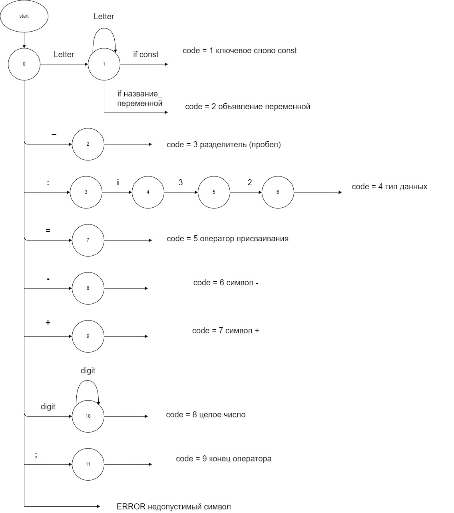
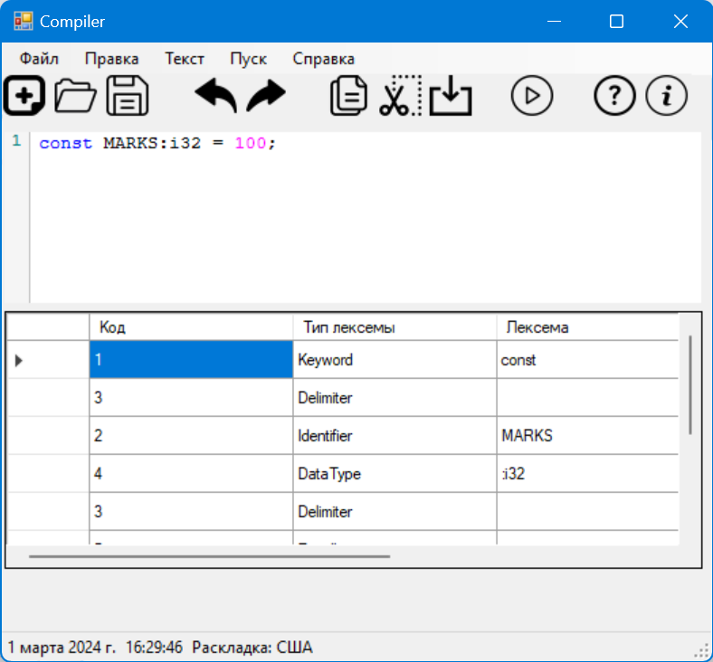

Цель: Изучить назначение лексического анализатора. Спроектировать алгоритм и выполнить программную реализацию сканера.
Вариант: Объявление целочисленной константы с инициализацией на языке Rust
Примеры верных строк:
const MARKS:i32 = 100;
const NUM:i32 = 5;
const NUMBER:i32 = 76564;

Тестовые примеры:
